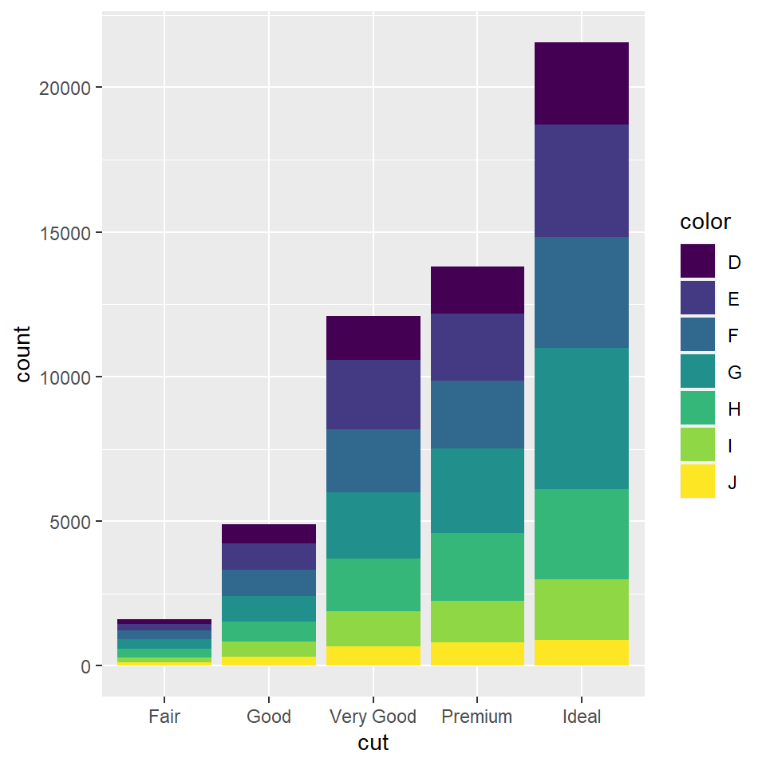
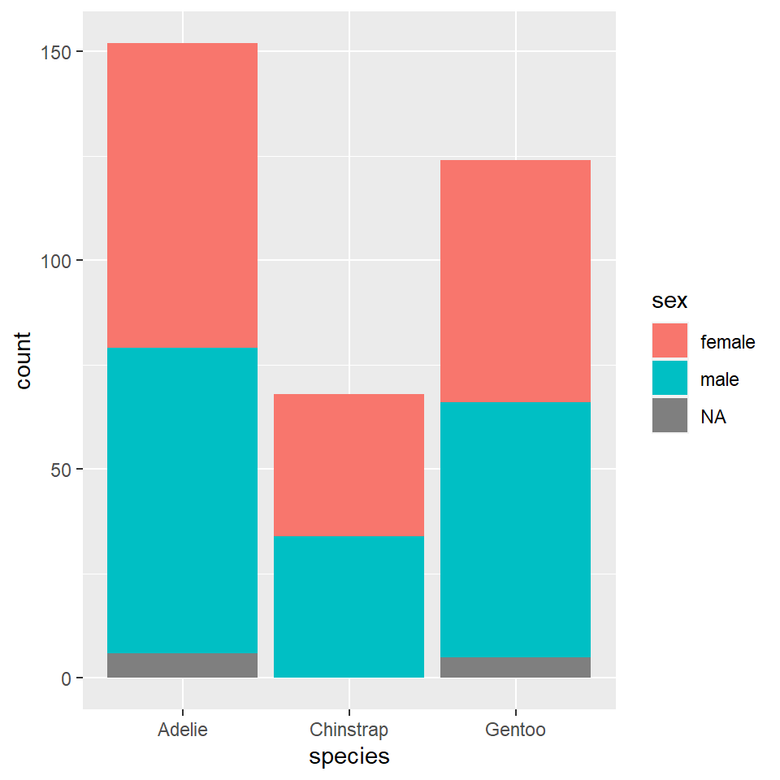
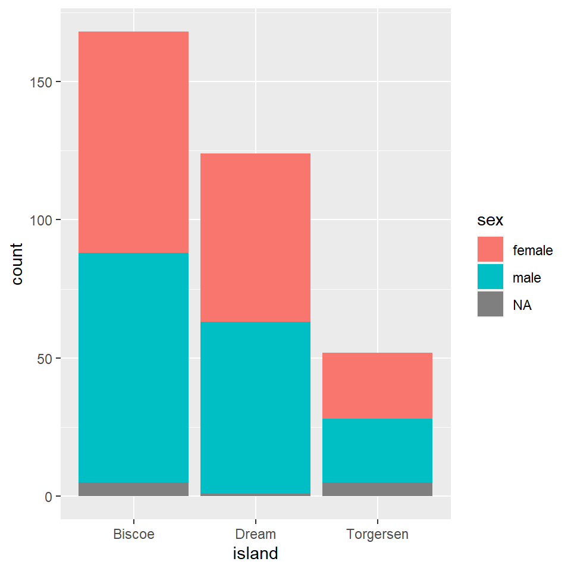
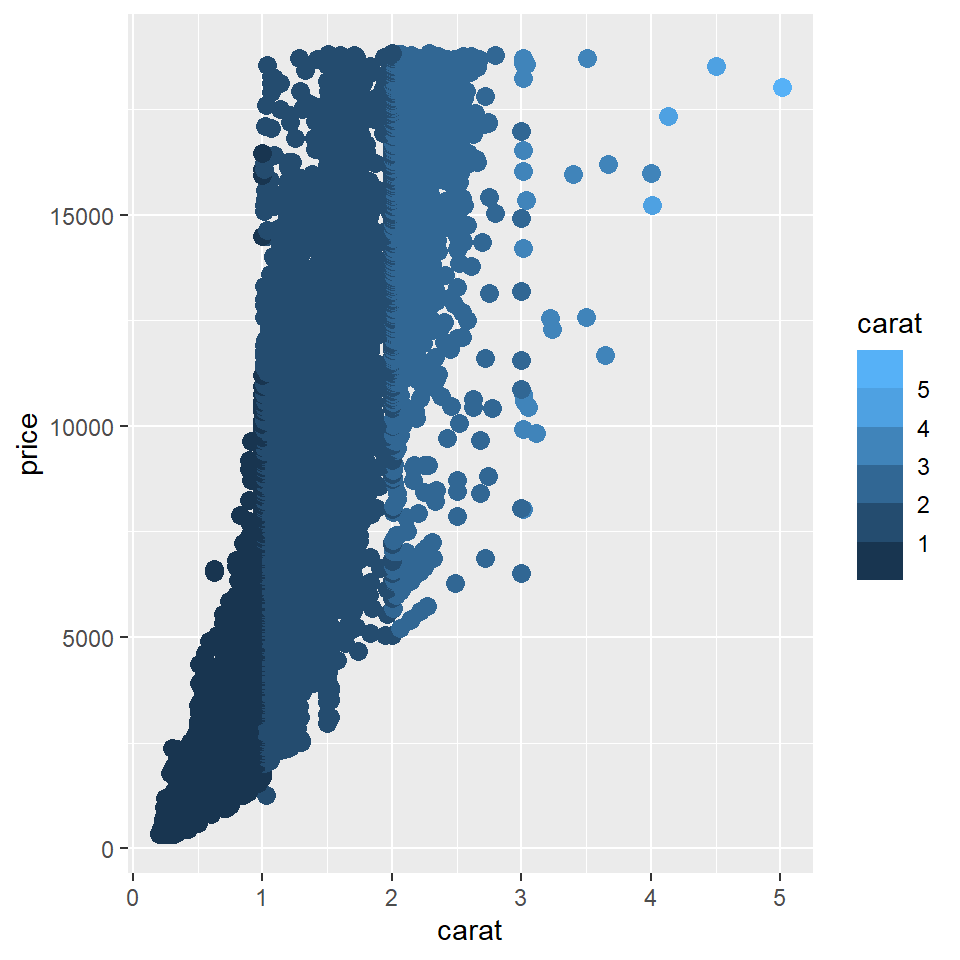

Using the diamonds data set to analyse data and create graphs showing the colour and depth of the diamonds. I used a colour palette for this graph as well using ggplot and geom_bar

Using the penguins data set to analyse data and create graphs showing the island, species and sex of the penguins. I have made a code for these graphs- geom_bar with fill

Using the diamonds data set to analyse data and create graphs showing the depth, colour and carat of the diamonds. I used a colour palette for this graph using ggplot and geom_point.

This workshop has been a very new and enriching experience for me. Learning a new language and seeing the various outputs using different data sets was interesting. I did find some parts of the workshop a bit challenging but figuring out a way to come around those problems to get to the end result was satisfying.
Personally, my favourite part of the studio was having to hear Arvind’s music playing in the background which definitely made for a good kick start in the morning. The studio was very well curated for one’s understanding. Realizing the various possibilities and outcomes by using just code was fascinating.
Despite the challenges I came across in this studio, I did find this experience new and interesting so I would love to explore creative coding in the future and this workshop was a great way of instilling that curiosity in me.